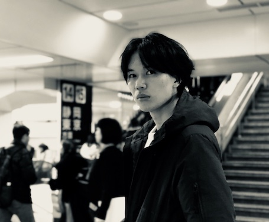

Assistant Professor
Shibaura Institute of Technology, Department of Civil Engineering
Urban Activity Landscape Design (ActScape) Lab.
oyama[at]shibaura-it.ac.jp
+81 (0) 70 6579 9096
Yuki Oyama is an Assistant Professor at Shibaura Institute of Technology and the director of the Urban Activity Landscape Design (ActScape) Lab. His main research interests are designs of human behavior and networks in urban spaces. He completed his PhD in Urban Engineering at the University of Tokyo, in March 2017, based on his work on route choice and pedestrian activity modeling using GPS trajectory data. After his PhD, he experienced postdoctoral researcher positions at Tokyo Institute of Technology (2017), at Ecole Polytechnique Federale de Lausanne (2017-2019), and the University of Tokyo (2019-2020). He was appointed to the current position in April 2020.
芝浦工業大学工学部土木工学科 助教．都市環境設計研究室主宰． 主な研究関心は，都市空間上の人間行動およびネットワークのモデリング・デザイン． 2017年に，移動体通信情報に基づく移動・活動軌跡分析の枠組みを提示する内容で，東京大学都市工学専攻にて博士（工学）の学位を取得． その後，日本学術振興会特別研究員PDとして東工大建築学系で土地利用モデルの研究を行う． 2017年10月から，EPFLのTransport and Mobility Laboratoryで，研究・教育助教として主に行動モデルと交通ネットワーク最適化 に関する研究・教育，プロジェクトマネジメント活動に従事．同時にEuroTechPostdoc Programmeのフェローシップを受け，EPFL/TUM で都市空間の最適化研究に取り組む．2019年10月より東京大学先端科学技術研究センターにて，物流の配送需要マネジメントの研究を行い， 2020年4月より現職．